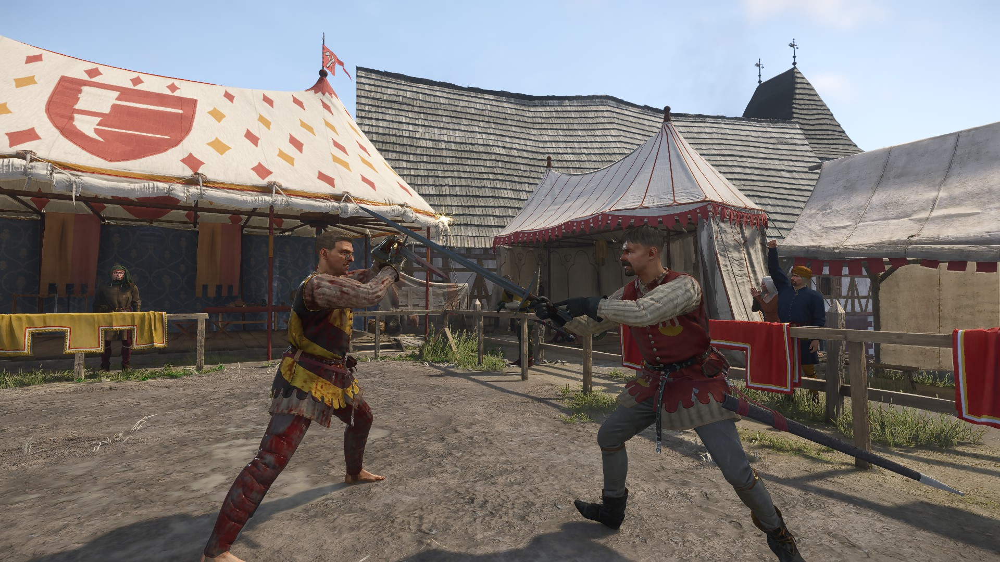
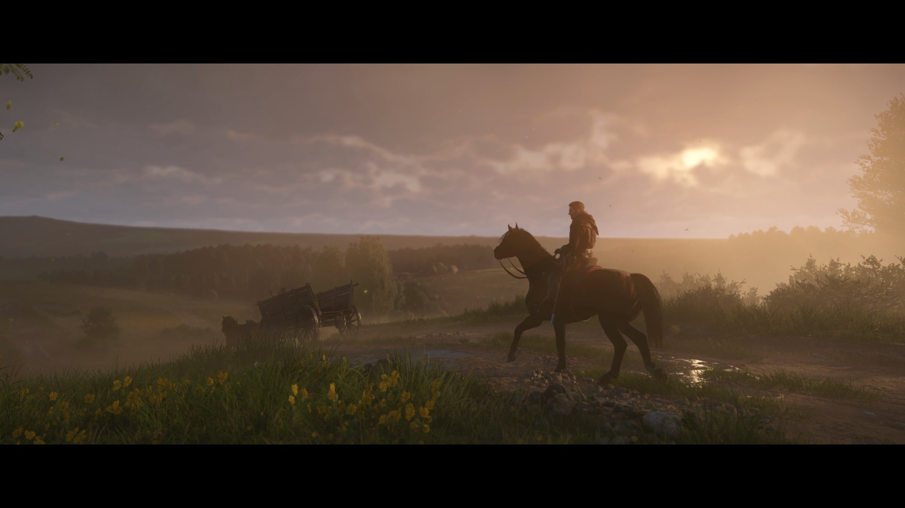

Kingdom Come Deliverance 2
My favorite RPG
- Realistic sword fighting mechanics
- Historically accurate combat with precise control over attacks and defenses.
- Immersive open-world exploration
- Vast medieval world filled with towns, forests, and castles, all rendered with stunning detail.
- Deep, choice-driven quests
- Compelling narrative where your choices shape the story and world around you.
Screenshots

